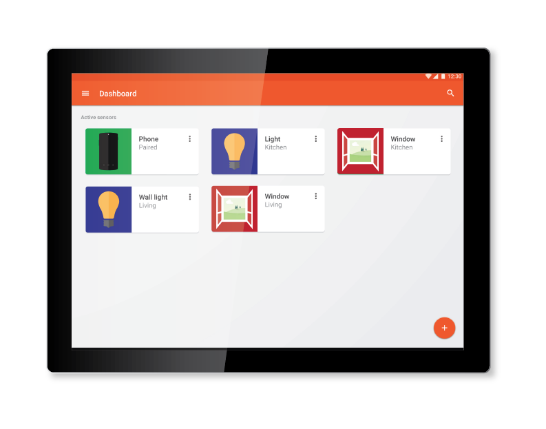

7" UDOO-based wall central

Easily connect sensors and triggers
Setup your controls and be notified
Use it to control and take care of your elder relatives
Our team
Gianpaolo Macario - Architecture, Continuous Integration, Linux kernel hacker
Wilfried Mbouenda Mbogne - Architecture, Android guru
Giuseppe Nesca - Java, Android, Xml , Input/Output
Alessandro Censi - Java, Android
Paolo Marino - Java, Database
Alessandro Morelli - Java, Android
Umberto Pepato - Branding, UI Design, Presentation Material
Alessandro Szewera - Presentation, Marketing Spetialist